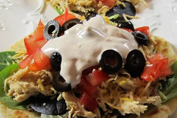

Ranch chicken tacos

Desciption
These ranch chicken tacos are a great change from regular Mexican-style tacos. A quick, cool summer dinner made with leftover rotisserie chicken. Naturally, you can use any type of chicken cooked the way you like; just be sure to shred it for real tacos. Per serving they give 717 calories, 49g of fat, 40g carbs and 31g of protein.
It should take 20 minutes to prepare and 5 minutes to cook, giving a total time of 25 minutes. This dish can serve 4 people 2 tacos each (a total of 8 tacos)
Ingredients
- ½ cup ranch dressing
- ¼ cup reduced-fat sour cream
- 1 (1 ounce) packet taco seasoning mix, divided
- 1 tablespoon mild chunky salsa
- 2 cups shredded rotisserie chicken
- 8 (6 inch) corn tortillas
- shredded lettuce
- 1 tomato, chopped
- 4 green onions, sliced
- 1 (4 ounce) can sliced black olives
- 1 avocado - peeled, pitted and diced (Optional)
- 1 cup shredded Colby-Monterey Jack cheese
Steps
- Combine ranch dressing, sour cream, 1 teaspoon taco seasoning, and salsa in a small bowl. Cover and refrigerate until serving.
- Toss chicken with remaining taco seasoning. Cover bowl loosely with wax paper or plastic wrap. Microwave chicken until chicken is heated through, about 2 to 3 minutes.
- Warm tortillas in a skillet for about a minute on each side to make them pliable. Place a scoop of chicken on the tortilla and top with lettuce, tomato, green onion, olives, avocado, cheese, and a spoonful of the ranch dressing mixture.